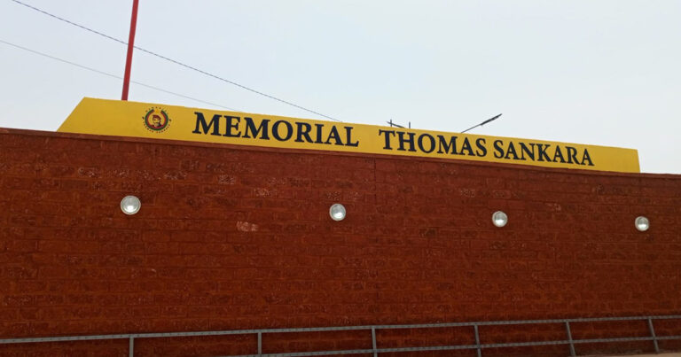

DESCRIPTION DU MEMORIAL DE THOMAS SANKARA
Le Mémorial de Thomas SANKARA situé à Ouagadougou est complexe historique et éducatif érigé sur le site de l'ex-Conseil de l'Entente à Ouaga 2000. S'étendant sur 14 hectares, il abrite le mausolée dédié au père de la révolution Thomas Isidore Noé SANKARA et ses 12 compagnons assasinés le 15 octobre 1987, ainsi qu'un espace muséal comprenant ses objets personnels et véhicules de fonction.
- Le Mausolée
- Le Complexe Muséal et Historique
- La statue géante de Thomas Sankara
Le Mausolée est conçu en blocs de latérite taillée, le bâtiment mêle tradition et modernité. Il s'appuie sur une symbolique solaire où la vie commence à l'est et s'achève à l'ouest. Le monument est orienté vers le sud. Nous remarquons également que les corps des victimes sont disposés du nord au sud, l'emplacement des tombes a été défini par tirage au sort. La tombe de Thomas Sankara se trouve au centre, entourée par celles de ses douze compagnons (six à gauche et six à droite).
Le site préserve des artéfacts majeurs ayant appartenu au capitaine Thomas Sankara, notamment des documents d'archives, ses objets personnels et ses véhicules de fonction.En sus, il propose une reconstitution de son bureau d'époque et des espaces dédiés à l'histoire de la Révolution Démocratique et Populaire (RDP).
Le monument comprend une imposante statue en bronze de 5 mètres de haut, érigée sur un socle en béton. Elle représente le père de la Révolution en tenue militaire, le poing levé vers le ciel, symbolisant la lutte, la liberté et la fierté africaine. La statue principale est entourée des bustes sculptés de ses douze compagnons d'armes et collaborateurs civils.
HISTORIQUE DU MEMORIAL DE THOMAS SANKARA
L'histoire du Mémorial Thomas Sankara est profondément liée aux soubresauts politiques du Burkina Faso, passant du lieu d'un drame national à un sanctuaire panafricain majeur.
- Le site originel : Le Conseil de l'Entente (1987)
- L'impulsion civile et le lancement du projet (2016 - 2020)
- Le procès historique et la consécration du Mausolée (2021 - 2025)
Le 15 octobre 1987, le capitaine Thomas Sankara et ses 12 compagnons d'armes sont assassinés lors d'un coup d'État militaire au siège du Conseil de l'Entente à Ouagadougou. De meme, pendant les 27 ans de gouvernance de Blaise Compaoré, le site reste une base militaire fermée et hautement sécurisée. L'histoire officielle passe sous silence les événements qui s'y sont déroulés.
Après la chute du régime en 2014, le projet est officiellement lancé le 2 octobre 2016 (date anniversaire du Discours d'Orientation Politique de 1983), sous l'égide d'un comité international soutenu par l'ancien président ghanéen Jerry Rawlings. La construction débute concrètement en mars 2019. Une imposante statue en bronze de Thomas Sankara de 5 mètres de haut est érigée et dévoilée au public le 17 mai 2020 pour symboliser la réappropriation du site.
En avril 2022, le tribunal militaire de Ouagadougou condamne par contumace Blaise Compaoré à la prison à perpétuité pour l'assassinat de Sankara. En outre, les restes de Thomas Sankara et de ses compagnons, exhumés pour les besoins de l'enquête judiciaire en 2015, sont officiellement réinterrés sur le site du mémorial lors d'une cérémonie solennelle en fevrier 2023. Et donc, le 17 mai 2025 le Mausolée officiel est officiellement inauguré par les autorités de la Transition. Le site ouvre ses portes au grand public deux jours plus tard, le 19 mai 2025, matérialisant enfin le devoir de mémoire.
Plongez au cœur de l'histoire du Burkina Faso en visitant le Mémorial Thomas Sankara, un lieu emblématique dédié à l'un des plus grands leaders africains. Situé à Ouagadougou, ce site chargé de mémoire invite les visiteurs à découvrir l'héritage, les idéaux et le parcours exceptionnel de Thomas Sankara.
- Emplacement: situé au coeur de Ouagadougou
- Horaires: Ouvrables 7j/7 de 8h00 à 18h00
- Accès: Tous publics
- Géolocalisation: 📍 Voir le Mémorial Thomas Sankara sur Google Maps